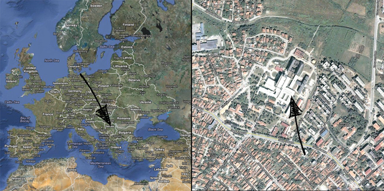
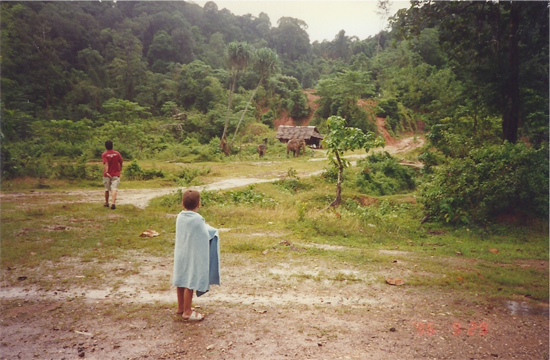
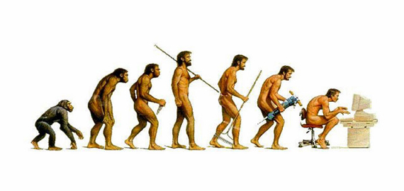
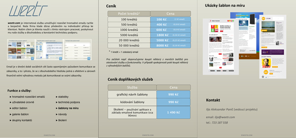
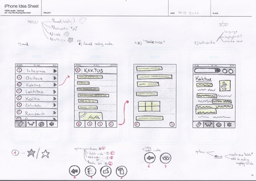
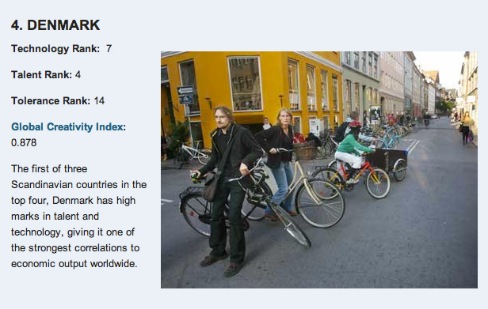

About Me
I was born on 2nd of August 1991 in Kragujevac, Serbia (still Yugoslavia at the time). My parents and I moved to Prague, Czech Republic during the war in 1992 so I have no actual memories of living in Serbia. But since we speak Serbian at home and I visited my relatives there quite often during my childhood, I could say I was influenced by Serbian culture - even though most Czechs can’t recognize that I’m not originally from the Czech Republic.
Actual position of hospital I was born in
What's interesting about me?
If I was asked to name one thing that sets me apart from most of my peers, I would probably say my rich experience with multicultural environments. I counted that I have visited over 36 countries in my life. These include countries like Nepal, India, Hong Kong and Brazil. The Majority of these visits were with my dad, whose business brought him there. And because of that I can say I've experienced these countries very differently than most of the tourists wearing rose-colored glasses and sunbathing in their fancy resorts. A timber factory in Indonesia (which was practically in a jungle) and a silver jewelry factory in Thailand are just some of these many experiences.
Me in Thailand (1996)
Life outside school
Besides IT and technology I devote my free time to playing basketball (currently only recreationally, but I played for a team for 8 years), music, reading, Twitter, blogging, video games and probably most of the time to thinking.

How time flies
If you wish to learn more about me and my interests then you can visit some of the following links:
Why IT?
There are a lot of aspects of IT which fascinate me; here are a few of them which I consider very important and which played an important role in my decision to pursue a career in IT.
It as a Craft
In today's era of economists, bankers and politicians, the ability to create something new and truly valuable is increasingly important. IT offers exactly that: you create something out of nothing, you create something tangible, something that has some objectively measurable value in real world. It's more than just talking about things, which I find is the foundation for a lot of jobs nowadays.
Defining our future
More and more people are claiming that the whole IT revolution is one huge bubble that is bound to burst sooner or later. I, on the other hand, think that overall impact IT has had on our everyday lives (especially the internet) is so big, that it will continue to be one of the main pillars of our civilization. It probably won't survive in the form we know it today, but rather in an evolved form developed from current paradigms. And I want to be part of that innovation.
Exaggurated but in my opinion truthful vision of our future
Small things matter
Probably the most beautiful thing about IT is the impact you can make in a small group of people (or even alone), in very little time and with limited resources.
Everyone has heard about tech/IT evangelists like Steve Jobs and Mark Zuckerberg, who have successfully started their businesses in a garage or a dorm room. The only thing you really need is a strong will, courage and passion. With these 3 key components you can build virtually anything from the ground up without being dependent on anyone else.
Me & IT
I still remember the day my dad brought home our first PC and how I played a Disney puzzle game that night. I was hooked, from that moment on. Around that period, technology and computers became one of my main hobbies and passions.
It all started with games, then came the internet, after that experiments with graphic design and video editing, and most recently web design, programming and blogging.
First experience
My first experience with IT on a professional level was a 4-month (from July 2011) work experience stint as product manager at Weetr, which is a product created by the IT network Fontai.
Brochure I created to send to potentional clients
Current projects
After 4 months at Weetr, I decided to quit and try to start a business of my own. After some time I eventually succeeded in assembling a team of 3 people to create an iOS app, which is in the process of being made at the moment.
While trying to build a new team for my other project (a web startup) I somehow ended up joining my former high-school schoolmate at his startup Learn With Larry (he worked alone up to this point), which shows a great potential for future growth and I'm very excited to be part of it.
What do I actually do?
My role in both of the projects is mainly business-oriented. But at projects this size that includes pretty much everything besides development and graphic design. My main activities and areas of responsibility include: accumulating & streamlining ideas (+brainstorming), marketing & PR, business plans and strategy, wireframing & prototyping and organizing our team of people.
Low fidelity wireframe for one of my mobile app ideas
What can I do?
Here is the list of some of my IT related skills, which have really helped me in communicating with developers and designers. I plan to expand this list during my studies, hopefully in Denmark.
| Level of knowledge | |
|---|---|
| HTML | |
| CSS | |
| Wordpress CMS | |
| Adobe Photoshop | |
| Sony Vegas | |
| Flash | |
| Java | |
| Interactive prototypes in Keynote | |
| OmniGraffle |
Why Denmark?
Nordic countries are known to be leaders in the field of technology (including IT) and innovation in general. What's special about Denmark is that it offers that unique combination of Nordic and west-European cultures, which you won't find anywhere else.
The 16 Most Creative Countries In The World (via Business Insider)
Support from the state
Denmark puts an incredible amount of attention and financial support into their educational system, which ensures a consistently high level of teaching and learning. Students are given various perks and benefits to make the process of learning more enjoyable, interesting and generally not boring.
Individual approach to education
Most higher education institutions here in the Czech Republic follow the same pattern: admit as many students as you can, let half of them fail the first year, work with the other half as one homogeneous group of equally skilled people.
I think this system is very much wrong. Every student is unique, every student requires a slightly different approach. I think students should be able to show their personality in class, to get feedback from their professors and to be offered an opportunity to project their individuality into their work.
All that can be achieved by teaching in smaller groups, where group work is encouraged, teachers are open to discussions and students are not thought as one big herd. From my research I came to a conclusion that a most of the universities in Denmark are trying to create this kind of environment, which is why I would prefer to study there.
Why Me?
I think when somebody writes a list of superlatives about themselves it is not always entirely accurate. Of course no one will write that he is lazy, always late, unambitious but instead that he is hard-working, punctual and ambitious instead. So I'll just skip this part and let others convince you of my qualities.
Following are translated excerpts from written evaluations I received every year from my high school professors.
During lessons you're always attentive, very diligent and often active. You don't neglect home preparation, you come prepared to lessons. I'm looking forward to work with you the next year."
"You have communication predispositions, you're capable of analytical and comparative thinking."
"He has developed an individual written style, and can tailor his writing to a particular audience. He uses humor to good effect and shows a range of his vocabulary to express himself precisely.
...
In class, Ilja is active and focused, working well in both larger and smaller groups.
...
He is a naturally communicative person, always eager to share his ideas.
...
He has displayed and increasingly sophisticated ability to present information in clear and structured manner - a fact which suggests that he will be an excellent communicator in his future pursuits."
"You have something to say, you write it in a clear, fitting and creative manner.
"You have a natural talent (in mathematics) and I believe you'll choose a field of study, where you will make good use of it."
"You sure know, that you belong to the best in the group. Both your presentation and organization skills are of a great standard. You have a good analytical mind and you're able to formulate and communicate results of these analyses to an audience. You cooperate well in a team: you have the talent to become its manager. We would especially like to highlight your work on time-management, which was the best in the class. It is obvious you can prepare and organize your tasks perfectly."
"Ilja, I'm glad that sport is your friend and it's noticeable in PE classes."